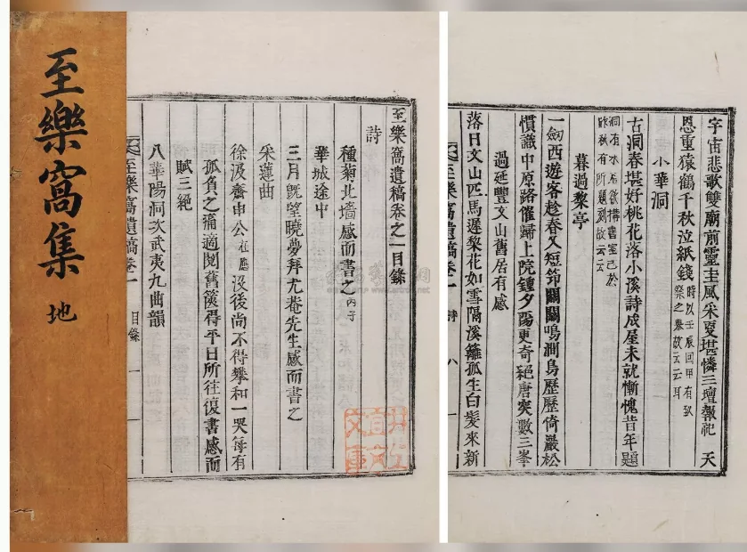

 点击图片可查看大图 · 原始图像 839×620 px 流拍 朝鲜李承根撰 至乐窝遗稿六卷 李承根 成交记录流拍 估价RMB 7,000-8,000 记录信息 拍卖日期2012-12-06 10:00 拍卖公司北京保利 拍卖专场2012秋季拍卖会 古籍文献名家翰墨、西文经典、影像及艺术品图书 创作年代原表未著录 开本21×17cm 尺寸类型开本 高 × 宽21.0 × 17.0 cm 纸张原表未著录 成交价原文无成交价（流拍） 来源位置Excel 第 31 行